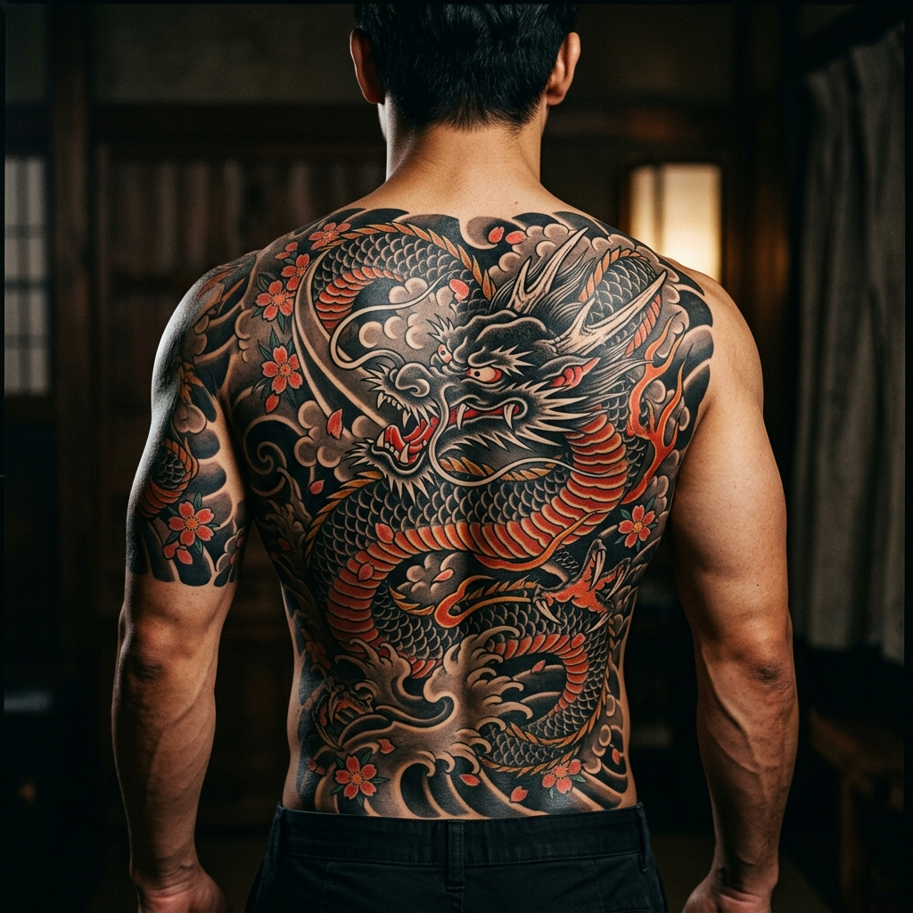
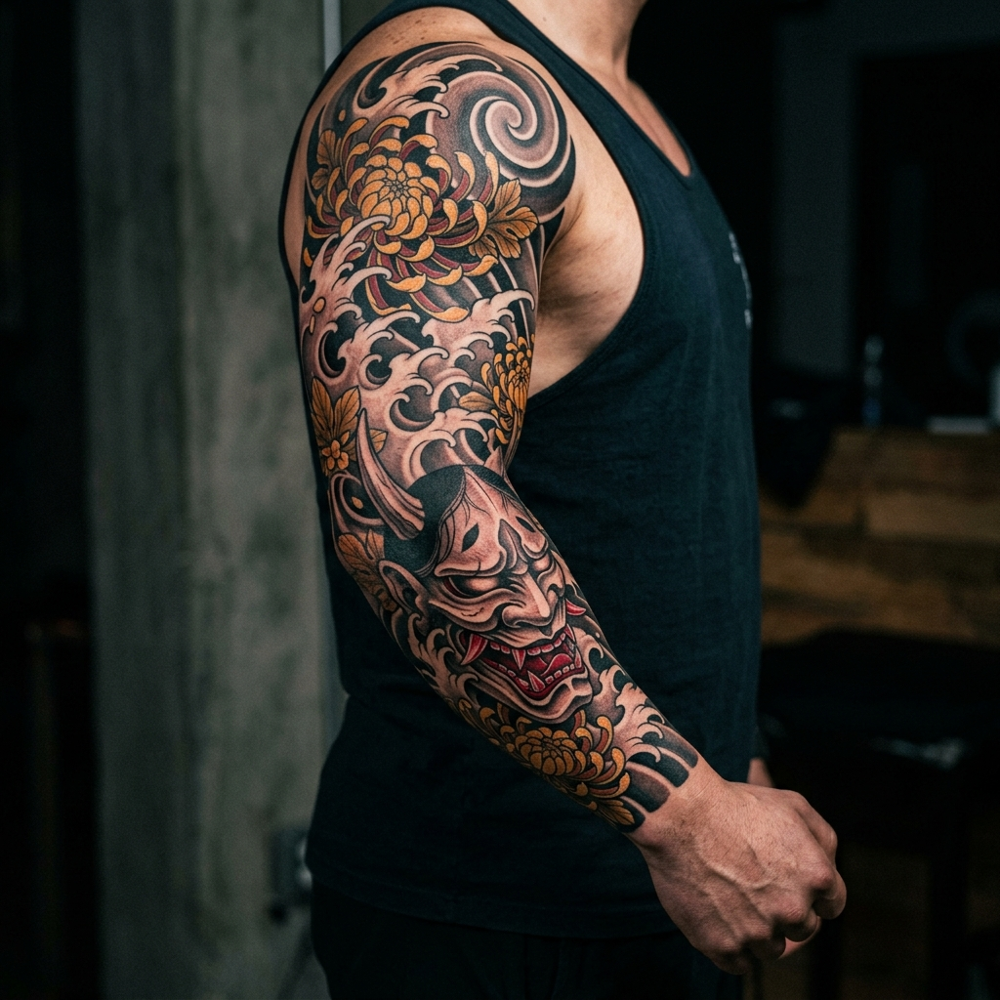
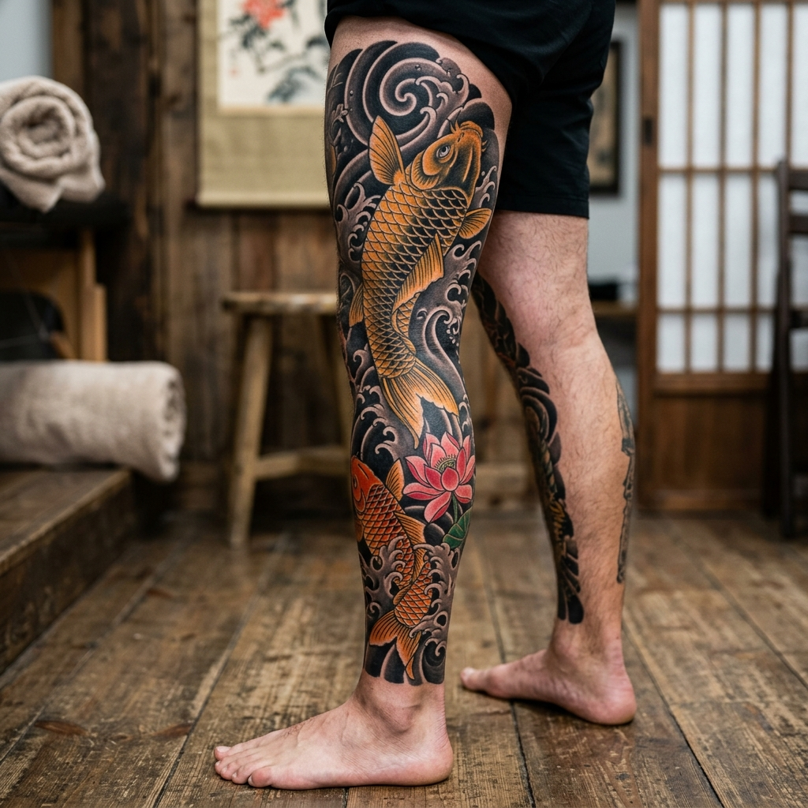
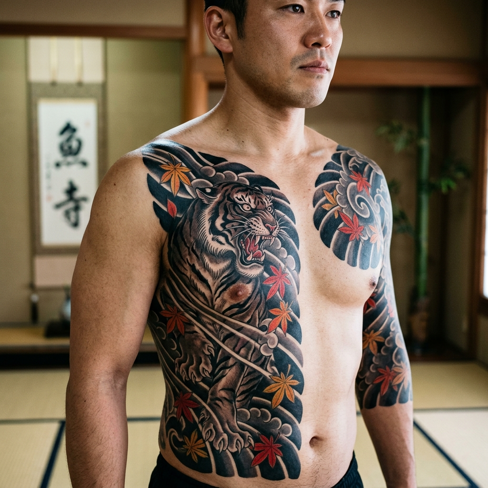

Espalda Completa
Dragón Celestial & Olas de Kanagawa
Pieza monumental que cubre espalda entera y media manga. Tintas Sumi negras profundas con acentos en bermellón lacado y flores de Sakura flotantes.
Diseños originales y piezas exclusivas de tradición y vanguardia japonesa concebidas por Dani Olmos. Cada obra se esculpe a medida para armonizar con el flujo anatómico de tu cuerpo.
Cada pieza es única e irrepetible. Diseñada desde cero respetando las proporciones, las estaciones y la rica iconografía tradicional nipona.

Pieza monumental que cubre espalda entera y media manga. Tintas Sumi negras profundas con acentos en bermellón lacado y flores de Sakura flotantes.

Composición de brazo completo donde el rostro dramático del Hannya emerge entre nubes de viento y pétalos dorados de Kiku.

Símbolo de perseverancia y superación. La carpa asciende entre remolinos turbulentos y flores de loto de color rosa pálido con fondos negros sólidos.

Composición asimétrica estilo Munewari. La mirada penetrante del tigre y las hojas de otoño simbolizan el coraje y la protección contra la adversidad.
En el tatuaje japonés cada elemento tiene un propósito profundo. Descubre qué significado resuena con tu historia antes de iniciar tu proyecto.
A diferencia de los dragones occidentales, el dragón oriental es benefactor. Representa la fuerza benévola, el dominio sobre el agua y el cielo, y la protección del portador ante cualquier infortunio.
Basada en la leyenda de la Puerta del Dragón: una carpa que nada contra la corriente y salta la cascada se transforma en dragón. Simboliza superar grandes dificultades en la vida.
Originaria del teatro Noh. Aunque su rostro refleja la ira y el desengaño, tradicionalmente se usa como un poderoso talismán protector que absorbe y repele las energías negativas.
El tigre representa el poder terrenal absoluto, gobernando el otoño y la dirección oeste. Frecuentemente se empareja con el dragón para simbolizar el equilibrio entre cielo y tierra.
«Un tatuaje japonés no es solo tinta bajo la piel; es una armadura viva que crece y respira contigo.»
Con más de 12 años dedicados en cuerpo y alma a estudiar las escuelas clásicas del tatuaje japonés (Irezumi, Horimono y Wabori), me enfoco en crear diseños completamente originales. No realizo copias de internet ni diseños repetidos de catálogo.
Cada proyecto comienza con un análisis de la fisonomía y el movimiento muscular del cliente. Mi trabajo equilibra el respeto por la iconografía milenaria con una lectura moderna, líneas limpias y contrastes sólidos que resisten impolutos el paso de las décadas.
Bocetado a mano y adaptado a tu anatomía antes de la aguja.
Pigmentos homologados de máxima saturación y agujas desechables de un solo uso.
Acompañamiento cercano durante todo el proceso de curación.
Selecciona la zona y el motivo que tienes en mente para obtener una orientación sobre sesiones, horas aproximadas y preparación recomendada.
El 50% del resultado final depende de cómo cuides tu piel durante las primeras tres semanas de cicatrización.
Mantén el film protector puesto las horas indicadas. Al retirarlo, lava la zona suavemente con agua tibia y jabón neutro antibacteriano usando solo tus manos limpias. Seca a toques suaves con papel de cocina, nunca con toalla.
Aplica una capa muy fina y homogénea de crema cicatrizante recomendada 2 o 3 veces al día. No satures el poro: el tatuaje necesita respirar para curar correctamente.
Prohibido nadar en piscinas, playa o sumergirte en bañeras durante 15 días. Evita saunas y el sudor excesivo por deporte intenso los primeros días. Jamás arranques las pielecillas o costras que salgan.
Una vez curado, utiliza siempre protector solar SPF 50+ al exponerte al sol. Esto mantendrá los negros sumi intensos y los colores vivos año tras año.
Cuéntame tu idea, la zona que deseas tatuar y disponibilidad. Responderé personalmente con el asesoramiento y propuesta de diseño.
Las mangas completas suelen requerir entre 3 y 4 sesiones (unas 18 a 24 horas en total), mientras que una espalda entera puede requerir de 5 a 7 sesiones. Las sesiones se espacian entre 3 y 4 semanas para permitir una curación perfecta entre capas de sombreado y color.
Sí. Tras la consulta inicial y la toma de medidas anatómicas, elaboro el boceto digital y te lo presento para revisar detalles, composiciones de fondo (viento, agua, flores) y ajustes antes de pinchar.
El estilo japonés es uno de los mejores para cover-ups gracias a los fondos de agua negra (Nami) y nubes. Sin embargo, cada caso debe evaluarse individualmente en el estudio o mediante fotos nítidas con buena luz.
Para formalizar la fecha en el calendario se solicita una señal que se descuenta del precio final del tatuaje. Puede abonarse por Bizum, transferencia o presencialmente en el estudio.